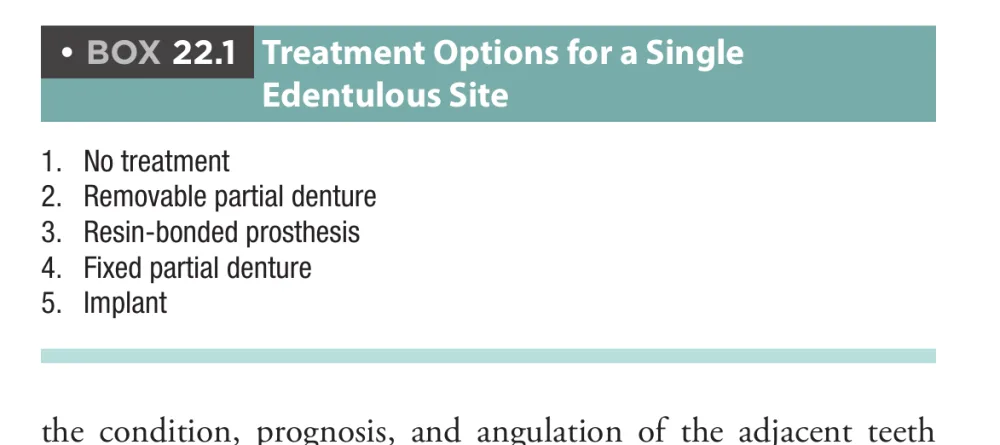
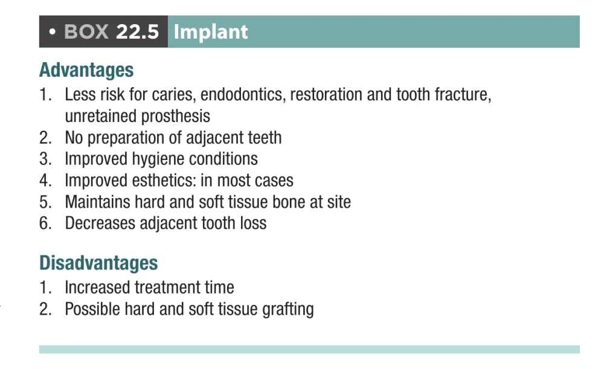

نسخه استخراجشده؛ ترجمه یا تأیید علمی انجام نشده است. وضعیت: captured
در یونیت تراکم استخوان دیدی که دهانههای یکدندانی تقریباً همیشه استخوان D2 دارند. حالا به همان موقعیت میرسیم — و میبینیم که استخوان خوب، تنها نیمی از تصمیم است.
پنج گزینه پیش روی توست:
۱. عدم درمان، ۲. پروتز پارسیل متحرک، ۳. پروتز رزینباند، ۴. پروتز پارسیل ثابت، ۵. ایمپلنت
گزینهی یکم — عدم درمان. و این گزینه را باید جدی گرفت:
«اگرچه در بیشتر موارد گزینهی عدم درمان ایدهآل نیست، بیمار باید همیشه از پیامدهای ممکن آگاه شود.»
و چرا اصلاً این گزینه را مطرح میکنیم؟ «پیشنهاد این گزینهی درمانی ممکن است برای درمانگران غیرمنتظره به نظر برسد، چون هدف دندانپزشکی بازگرداندن بیمار به عملکرد بهینه است؛ با این حال، ارائهی این گزینه به درمانگر اجازه میدهد وارد گفتوگویی دربارهی پیامدهای گوناگون از دست دادن دندان شود.»
یعنی «عدم درمان» یک گزینهی آموزشی است، نه یک توصیه. مطرح کردنش، ابزار گفتوگو با بیمار است.
و مزایایش تنها دو تاست: «(۱) بیمار نیازی به گذراندن روشهای بیشتر ندارد؛ و (۲) هیچ فشار مالی بر بیمار نیست.»
و اکنون پیامدها — که زنجیرهوارند:
«اگر دندانی در هر موقعیتی قدامیتر از مولرهای دوم کشیده شود، بیمار باید انتظار داشته باشد که دندان دیستالی آن شروع به تیلت مزیالی به داخل فضای بیدندان کند.»
و زنجیره ادامه مییابد: «این به احتمال زیاد به تغییر صفحهی اکلوزال در آن سمت میانجامد. با تیلت مزیالی دندانها، جهت بار تغییر میکند، که ممکن است استرس بیشازحد به لیگامان پریودنتال وارد کند.»
و در قوس مقابل: «دندانهای تماسکننده در قوس مقابل شروع به سوپرااِراپشن میکنند.» و اصلاح این دندانها بعداً «ممکن است به درمان ارتودنسی یا اندودنتیک یا کراون نیاز داشته باشد. در برخی موقعیتها ممکن است کشیدن لازم شود.»
و یک پیامد که کمتر به آن فکر میشود و کاملاً غیرموضعی است:
«بیمار معمولاً سمت کاملاً دنداندار را برای جویدن ترجیح میدهد، بهدلیل کاهش کارایی جویدن در سمت بخشیبیدندان. این وضعیت به استفادهی بیشازحد از سمت کاملاً دنداندار میانجامد.»
و پیامدهایش: «شکست کراونها (پرسلن، زیرکونیا)، شکست مینا یا ترمیمهای موجود، سایش اکلوزال چشمگیر، یا سندرم درد مایوفاشیال.»
یعنی از دست دادن یک دندان در یک سمت، میتواند سمت دیگر دهان را از پا دربیاورد.
گزینهی دوم — پروتز پارسیل متحرک. و اینجا اعداد سختاند:
مزایایش: راحتی، دریافت پروتز دندانبر پس از چند جلسه، نبود درمان تهاجمی، و «اغلب هزینهی کمتری در مقایسه با بیشتر گزینههای درمانی دیگر.»
و اکنون معایب:
پذیرش پایین: «پروتزهای پارسیل متحرک، حتی آنهایی که عمدتاً دندانبر هستند، نرخ پذیرش پایینی نزد بیمار دارند.» — دشواری در خوردن، گیر افتادن غذا زیر پروتز، اختلال گفتار، و حجیم بودن.
و عدد کلیدی این درس:
«در مطالعهای که نیاز به تعمیر دندان تکیهگاه را بهعنوان شاخص شکست ارزیابی کرد، نرخهای «موفقیت» پروتزهای پارسیل متحرک متعارف ۴۰ درصد در ۵ سال و ۲۰ درصد در ۱۰ سال بود.»
۴۰ درصد در پنج سال. ۲۰ درصد در ده سال. این را با نرخ بقای بیش از ۹۵ درصدی ایمپلنت تکدندان که در بخش بعد میبینی مقایسه کن.
و آنچه بیماران با پارسیل نشان میدهند: «تحرک بیشتر دندانهای تکیهگاه، احتباس پلاک بیشتر، خونریزی بیشتر هنگام پروبینگ، بروز بالاتر پوسیدگی، مهار گفتار، مهار چشایی، و عدم پایبندی به استفاده.»
و دادهی از دست دادن دندان تکیهگاه:
«از دست دادن دندان تکیهگاه برای یک پروتز پارسیل متحرک ممکن است تا ۲۳ درصد در ۵ سال و ۳۸ درصد در ۸ سال باشد.»
یعنی نزدیک به چهار نفر از هر ده بیمار، ظرف هشت سال یک دندان تکیهگاه را از دست میدهند.
و تحلیل استخوان — که ظریف و مهم است:
«بهطور قابل توجه، تحلیل استخوان در نواحی پشتیبانی بافت نرم در بیمارانی که پروتز متحرک میپوشند، در مقایسه با بیمارانی که پارسیل نمیپوشند، تسریع میشود.»
این جمله را دو بار بخوان. پروتز پارسیل نهتنها تحلیل را متوقف نمیکند، بلکه آن را تسریع میکند. و دلیلش: چون پارسیلها طوری طراحی میشوند که نیرو را از دندانهای تکیهگاهِ اغلب ضعیف دور کنند، نتیجه «افزایش تحرک پروتز متحرک و پشتیبانی بافت نرم بیشتر» است — و همین تکیهی بیشتر بر بافت نرم، تحلیل استخوان زیرین را تسریع میکند.
و یک عارضهی کمگفتهشده: پارسیل تکدندانی (نزبیت) «هیچ تثبیت متقاطع قوسی ندارد؛ بنابراین بلع تصادفی یا آسپیراسیون ممکن است رخ دهد اگر جدا شود.» — و گزارشهای موردی متعددی از بلع ناخواستهی پروتز وجود دارد که به درمان پزشکی و خارج کردن از مری نیاز داشته است.

مزایای ایمپلنت در شش بند خلاصه میشود:
۱. خطر کمتر پوسیدگی، درمان ریشه، شکست ترمیم و دندان، و پروتز بدون گیر
۲. نبود تراش دندانهای مجاور
۳. شرایط بهداشتی بهتر
۴. زیبایی بهتر در بیشتر موارد
۵. حفظ استخوان و بافت سخت و نرم در جایگاه
۶. کاهش از دست دادن دندانهای مجاور
و تنها دو عیب: ۱. افزایش زمان درمان، ۲. احتمال نیاز به گرافت بافت سخت و نرم
و اکنون سیر تاریخی اعداد، که ارزش دانستن دارد:
• ۱۹۹۰: «۹ درصد شکست ایمپلنت ظرف ۳ سال از تکمیل پروتز» روی ۲۳ ایمپلنت.
• ۱۹۹۲: ۳۷ ایمپلنت با کراون تکدندان در ۳۴ بیمار؛ «نرخ موفقیت تجمعی ثبتشده ۹۳٫۷ درصد بود.»
• و از حدود ۱۹۹۳ تا امروز: «ایمپلنتهای تکدندان قابل پیشبینیترین روش جایگزینی دندان شدهاند، با نرخهای موفقیتی که از ۹۵ درصد فراتر میرود.»
حالا این را کنار عدد پارسیل بگذار: بیش از ۹۵ درصد در برابر ۲۰ درصد در ده سال.
و نتیجه:
«ایمپلنت تکدندان بالاترین نرخ بقا را در میان پنج گزینهی درمانی ارائهشده نشان میدهد. افزون بر این، دندانهای مجاور بالاترین نرخ بقا و کمترین نرخ عارضه را دارند، که مزیت قابل توجهی است.»
به بخش دوم این جمله دقت کن — و این نکتهای است که اغلب از قلم میافتد: ایمپلنت نهتنها خودش بیشتر دوام میآورد، بلکه همسایههایش هم بیشتر دوام میآورند. چون تراش نمیشوند، پوسیدگی و درمان ریشهی کمتری میگیرند.
و مقایسهی هزینه — که خلاف تصور رایج است:
«مطالعات مقایسهی هزینه نتیجه میگیرند که ترمیم ایمپلنت نسبت هزینهـاثربخشی مطلوبتری نشان میدهد.»
و دلیلش زمانی است: «حتی وقتی دندانهای مجاور از دست نروند، پروتز پارسیل ثابت متعارف اغلب باید هر ۱۰ تا ۲۰ سال بهطور میانگین تعویض شود، بهدلیل پوسیدگی، عوارض اندودنتیک، شکست پرسلن، یا ترمیم بدون گیر (که ممکن است پوسیده شود و به درمان ریشه نیاز پیدا کند).»
پس مقایسهی هزینه باید در افق ده تا بیست ساله انجام شود، نه در روز تحویل.
و اکنون معایب — که باید صادقانه گفت:
زمان درمان: «از جایگذاری جراحی اولیه، ایمپلنت بهطور میانگین ۳ تا ۶ ماه برای استئواینتگریشن نیاز دارد.» و این «به تراکم استخوان بیمار در آن ناحیه و حجم استخوان موجود هنگام جایگذاری بستگی دارد.»
هر دو متغیر را از یونیت پیش میشناسی — تراکم و حجم. اینجا میبینی که آنها فقط بر موفقیت اثر نمیگذارند؛ بر زمان هم اثر میگذارند.
و یک نکتهی دیگر: برای تسریع، «جایگذاری فوری و ایمپلنتهای بارگذاریشده امروزه تکنیک محبوبی هستند؛ با این حال، محدودیتهایی وجود دارد.» — موضوعی که در یونیت بارگذاری فوری به آن میرسیم.
نیاز به درمان افزوده: «بهویژه در نواحی زیبایی، اصلاح بافت نرم ممکن است برای تغییر درِیپ بافت نرم یا بهبود بایوتایپ بافت بیمار لازم باشد.»
و زیبایی — که مستقیماً به یونیت ۲٫۱ برمیگردد:
«بر پایهی استخوان موجود و فضای ارتفاع تاج، پروتز نهایی ممکن است کانتور سنتی دندان (FP-1)، فرم تاج بلندتر (FP-2)، یا نیازمند افزودن پرسلن/زیرکونیای صورتی برای تقلید کانتور طبیعی بافت نرم (FP-3) باشد.»
و توصیهی ارتباطی: «بیمار باید از این پیامدهای پروتزی ممکن آگاه باشد، چون ارزشهای زیبایی او ممکن است نیاز به روشهای کمکی گرافت استخوان را دیکته کند.»
به فعل «دیکته کند» دقت کن. انتظار زیبایی بیمار میتواند یک درمان جراحی افزوده را الزامی کند — و این گفتوگو باید پیش از شروع درمان انجام شود، نه پس از آن.
